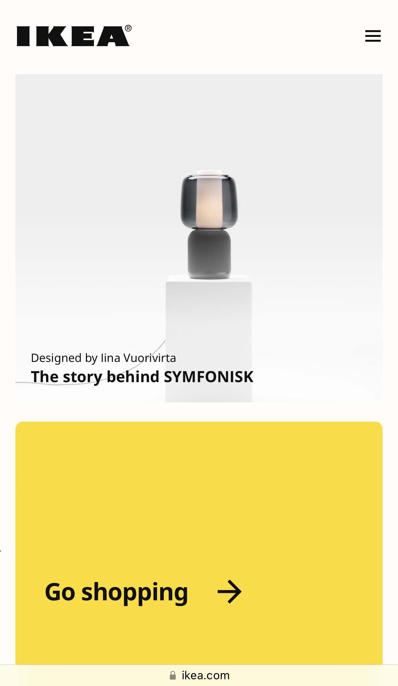

White Space & Clean Design
IKEA
ikea.com
Ikea's simple and minimalistic design in their products translates to the design of their website by their use of white space and clean design. Using this important principle allows users to browse with no obstacles. It grabs the user's attention and directs it to the content and product the company wants to highlight.
Rule of Thirds
Amazon
amazon.comAmazon's main page exemplifies the rule of thirds. In using this principle, they take the largest space for promotions or products they want to feature while still showing basic and relevant information, like their navigation bar and quick links to purchase products. I feel this is a very effective way to grab user's attention and improve shopper's experience.
Contrast
Accidentally Wes Anderson
AccidentallyWesAnderson.comThis website emphasizes the elements they want to highlight by the use of contrast. This principle aids in the content's readability and helps capture the user's attention by guiding the viewer to a specific focal point. With the use of contrast in colors, images and different type of fonts, the page highlights important information and adds variety.